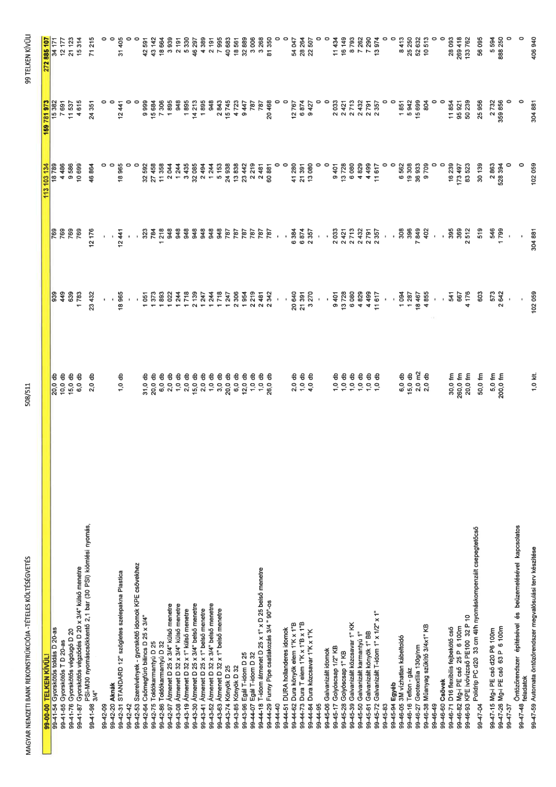

| Tétel | Menny. | Egys. | Anyag e.ár (net HUF) | Díj e.ár (net HUF) | Anyag összesen (net HUF) | Díj összesen (net HUF) | Anyag+Díj összesen (net HUF) |
|---|---|---|---|---|---|---|---|
| 99-41-54 Gyorskötős toldó D 20-as | 20,0 | db | 939 | 769 | 18 789 | 15 382 | 34 171 |
| 99-41-65 Gyorskötős T idom D 20-as | 10,0 | db | 449 | 769 | 4 486 | 7 691 | 12 177 |
| 99-41-76 Gyorskötős végdugó D 20 | 15,0 | db | 639 | 769 | 9 586 | 11 537 | 21 123 |
| 99-41-87 Gyorskötős végdugó D 20 x 3/4" | 6,0 | db | 1 783 | 769 | 10 699 | 4 615 | 15 314 |
| 99-41-98 PSI-M30 nyomáscsökkentő | 2,0 | db | 23 432 | 12 176 | 46 864 | 24 351 | 71 215 |
| 99-42-31 STANDARD 12" szögletes szelepakna | 1,0 | db | 18 965 | 12 441 | 18 965 | 12 441 | 31 405 |
| 99-42-64 Csőmegfúró bilincs D 25 x 3/4" | 31,0 | db | 1 051 | 323 | 32 592 | 9 999 | 42 591 |
| 99-42-75 Toldókarmantyú D 25 | 20,0 | db | 1 373 | 784 | 27 458 | 15 684 | 43 142 |
| 99-42-86 Toldókarmantyú D 32 | 6,0 | db | 1 893 | 1 218 | 11 358 | 7 306 | 18 664 |
| 99-42-97 Átmenet D 25 x 3/4" külső | 2,0 | db | 1 022 | 948 | 2 044 | 1 895 | 3 939 |
| 99-43-08 Átmenet D 32 x 3/4" külső | 1,0 | db | 1 244 | 948 | 1 244 | 948 | 2 191 |
| 99-43-19 Átmenet D 32 x 1" külső | 2,0 | db | 1 718 | 948 | 3 435 | 1 895 | 5 330 |
| 99-43-30 Átmenet D 25 x 3/4" belső | 15,0 | db | 2 139 | 948 | 32 085 | 14 213 | 46 297 |
| 99-43-41 Ámenet D 25 x 1" belső | 2,0 | db | 1 247 | 948 | 2 494 | 1 895 | 4 389 |
| 99-43-52 Átmenet D 32 x 3/4" belső | 1,0 | db | 1 244 | 948 | 1 244 | 948 | 2 191 |
| 99-43-63 Átmenet D 32 x 1" belső | 3,0 | db | 1 718 | 948 | 5 153 | 2 843 | 7 995 |
| 99-43-74 Könyök D 25 | 20,0 | db | 1 247 | 787 | 24 938 | 15 745 | 40 683 |
| 99-43-85 Könyök D 32 | 6,0 | db | 2 306 | 787 | 13 838 | 4 723 | 18 561 |
| 99-43-96 Egál T-idom D 25 | 12,0 | db | 1 954 | 787 | 23 442 | 9 447 | 32 889 |
| 99-44-07 Egál T-idom D 32 | 1,0 | db | 2 219 | 787 | 2 219 | 787 | 3 006 |
| 99-44-18 T-idom átmenet D 25 x 1" | 1,0 | db | 2 481 | 787 | 2 481 | 787 | 3 268 |
| 99-44-29 Funny Pipe csatlakozás 3/4" | 26,0 | db | 2 342 | 787 | 60 881 | 20 468 | 81 350 |
| 99-44-62 Dura könyök elem 1" K x 1" B | 2,0 | db | 20 640 | 6 384 | 41 280 | 12 767 | 54 047 |
| 99-44-73 Dura T elem 1"K x 1"B x 1"B | 1,0 | db | 21 391 | 6 874 | 21 391 | 6 874 | 28 264 |
| 99-44-84 Dura közcsavar 1"K x 1"K | 4,0 | db | 3 270 | 2 357 | 13 080 | 9 427 | 22 507 |
| 99-45-17 Golyóscsap 1/2" KB | 1,0 | db | 9 401 | 2 033 | 9 401 | 2 033 | 11 434 |
| 99-45-28 Golyóscsap 1" KB | 1,0 | db | 13 728 | 2 421 | 13 728 | 2 421 | 16 149 |
| 99-45-39 Galvanizált közcsavar 1" KK | 1,0 | db | 6 080 | 2 713 | 6 080 | 2 713 | 8 793 |
| 99-45-50 Galvanizált karmantyú 1" | 1,0 | db | 4 829 | 2 432 | 4 829 | 2 432 | 7 262 |
| 99-45-61 Galvanizált könyök 1" BB | 1,0 | db | 4 499 | 2 791 | 4 499 | 2 791 | 7 290 |
| 99-45-72 Galvanizált T-idom 1" x 1/2" x 1" | 1,0 | db | 11 617 | 2 357 | 11 617 | 2 357 | 13 974 |
| 99-46-05 3M vízhatlan kábeltoldó | 6,0 | db | 1 094 | 308 | 6 562 | 1 851 | 8 413 |
| 99-46-16 Teflon - gáz | 15,0 | db | 1 287 | 396 | 19 308 | 5 942 | 25 250 |
| 99-46-27 Geotextília 130g/nm | 2,0 | m2 | 18 467 | 7 849 | 36 933 | 15 699 | 52 632 |
| 99-46-38 Műanyag szűkítő 3/4x1" KB | 2,0 | db | 4 855 | 402 | 9 709 | 804 | 10 513 |
| 99-46-71 D16 flexibilis fejbekötő cső | 30,0 | fm | 541 | 395 | 16 239 | 11 854 | 28 093 |
| 99-46-82 Mg-i PE cső 25 P 6 100m | 260,0 | fm | 667 | 369 | 173 497 | 95 921 | 269 418 |
| 99-46-93 KPE ivóvízcső PE100 32 P 10 | 20,0 | fm | 4 176 | 2 512 | 83 523 | 50 239 | 133 762 |
| Polidrip pc d20 33 cm csepegtetőcső | 50,0 | fm | 603 | 519 | 30 139 | 25 956 | 56 095 |
| 99-47-15 Mg-i PE cső d20 P6 100m | 5,0 | fm | 573 | 546 | 2 863 | 2 732 | 5 594 |
| 99-47-26 Mg-i PE cső 63 P 6 100m | 200,0 | fm | 2 642 | 1 799 | 528 394 | 359 856 | 888 250 |
| 99-47-59 Automata öntözőrendszer terv | 1,0 | klt | 102 059 | 304 881 | 102 059 | 304 881 | 406 940 |
